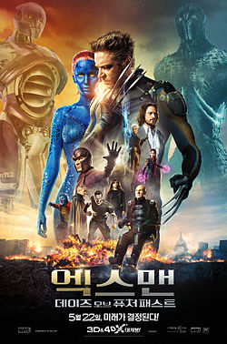

엑스맨: 데이즈 오브 퓨처 패스트
엑스맨: 데이즈 오브 퓨처 패스트
X-Men: Days of Future Past

감독 브라이언 싱어
제작 로런 슐러 도너
브라이언 싱어
사이먼 킨버그
매슈 본
각본 사이먼 킨버그
매슈 본
제인 골드먼
원작 크리스 클레어먼트, 존 번의 코믹스,
데이즈 오브 퓨처 패스트
출연 휴 잭맨
제임스 매커보이
마이클 패스벤더
제니퍼 로런스
핼리 베리
애나 패퀸
엘런 페이지
피터 딘클리지
이언 매켈런
패트릭 스튜어트
촬영 뉴턴 토머스 시걸
편집 존 오트먼
음악 존 오트먼
제작사 20세기 폭스
마블 엔터테인먼트
배드 햇 해리 프로덕션
도너스 컴퍼니
배급사 20세기 폭스
개봉일 2014년 5월 10일 (대한민국)
2014년 5월 22일 (영국)
2014년 5월 23일 (미국)
시간 131분[1]
국가 미국, 영국[2]
언어 영어
제작비 2억 2500만 달러[3]
수익 $741,451,833[4]
《엑스맨: 데이즈 오브 퓨처 패스트》(영어: X-Men: Days of Future Past)는 2014년 미국의 슈퍼히어로 영화로, 마블 코믹스에 등장하는 가상의 엑스맨 캐릭터와 1981년에
크리스
클레이먼트와 존 번이 제작한 《언캐니 엑스맨》의 "데이즈 오브 퓨처 패스트(옛 미래의 나날)"를 원작으로 하였다. 브라이언 싱어가 감독하고 20세기 폭스가 배급한 이 작품은 엑스맨 영화 시리즈의
일곱
번째 영화이자 2000년 《엑스맨》, 2003년 《엑스맨 2》 이후 브라이언 싱어가 감독한 세 번째 엑스맨 영화이다. 앙상블 캐스트로 휴 잭맨, 제임스 매커보이, 마이클 패스벤더, 제니퍼
로런스, 핼리
베리, 엘런 페이지, 니콜라스 홀트, 숀 애슈모어, 피터 딘클리지, 이언 매켈런, 패트릭 스튜어트 등이 출연한다. 사이먼 킨버그, 매슈 본, 제인 골드먼이 줄거리를 썼으며, 킨버그가 각본을
짰다.
《데이즈 오브 퓨처 패스트》는 2006년 《엑스맨: 최후의 전쟁》과 2011년 《엑스맨: 퍼스트 클래스》 모두와 이어지는 속편이다. 주요 촬영은 2013년 4월 캐나다 몬트리올에서 시작되었으며
2013년 8월에 종료되었다. 2014년 5월 10일 뉴욕 시에서 영화의 시사회가 열렸으며,
[5] 2014년 5월 23일 미국에서 2D와 3D로
개봉하였다.
[6] 대한민국을 비롯한 일부 국가에서는 하루
빠른 5월 22일 개봉하였다.
[7]
줄거리
2023년 미래의 디스토피아에서, 센티넬이라고 불리는 로봇들이 돌연변이(초인적인 능력을 가지고 태어나는 인간)를 학살하고 있다. 이 로봇들은 돌연변이를 낳을 수 있는 유전자를 가진
인간들까지
죽인다. 한 엑스맨 무리는 키티 프라이드의 힘을 빌려 한 사람의 의식을 과거로 보내 위험을 예고하는 방법으로 계속해서 센티넬의 위협을 피한다.
이 엑스맨들은 중국의 한 수도원에서 매그니토와 프로페서 X와 회동한다. 그들은 울버린의 의식을 과거로 보내 센티넬의 설계를 주도한 볼리바 트라스크를 죽이려는 미스틱을 막기로 한다. 그
암살로 인해
트라스크의 죽음이 순교로 포장되고, 이후 미스틱이 사로잡힌 뒤 그녀의 돌연변이 유전자를 인간들이 역이용하여 미래의 센티넬이 강력한 힘을 갖게 되기 때문이다. 프로페서 X는 치유를 위해서
젊은
시절의 자신을 꼭 찾으라고 로건에게 조언한다.
1973년으로 돌아간 울버린은 엑스맨션을 찾아가고, 젊은 시절의 행크 맥코이와 자비에를 만난다. 자비에는 그의 엑스맨들이 대부분 죽어 버려서 학교가 실패한 뒤로 폐인이 되었고, 자신의
텔레파시
능력을 없애 버려 다시 걸을 수 있는 혈청에 중독 되어 있다. 울버린은 자비에에게 존 F. 케네디를 암살한 혐의로 펜타곤 지하에 갇힌 매그니토를 탈옥시키자고 설득한다. 그들은 눈에 안
보일
정도로 빠르게 움직이는 돌연변이 피에트로 막시모프의 도움으로 매그니토를 탈옥시킨다.
트라스크는 워싱턴 DC의 의회에서 센티넬 계획의 지원을 요청하지만 승인 받지 못한다. 한편 사이공에서는, 미스틱이 트라스크의 연구에 젊은 윌리엄 스트라이커를 비롯한 돌연변이 군인들이
동원되는 것을
막는다. 미스틱은 트라스크 산업을 조사하면서 그가 돌연변이에 대항할 무기를 만들기 위해 돌연변이들을 잡은 뒤 실험 했다는 사실을 알게 된다. 파리에서 트라스크가 암살될 것임을 알게 된
자비에와
매그니토는 미스틱을 막고자 비스트, 울버린과 함께 전용기를 타고, 비행기 안에서 서로의 잘못에 대해 승강이를 벌인다.
파리에서 미국과 베트남은 베트남 전쟁 종전에 대한 평화 협정을 맺는다. 미스틱은 베트남 장군으로 위장하여 트라스크의 회의에 잠입하고, 미스틱이 트라스크를 암살하려는 찰나에 자비에와 매그니토
일행이
도착한다. 매그니토는 미스틱을 죽여야만 암울한 미래를 막을 수 있다고 생각해 그녀에게 총알을 쏘고, 미스틱은 창문 밖으로 달아난다. 건물 밖에서 돌연변이들 간의 난투가 벌어지고, 결국
그들은
구경꾼들과 텔레비전 카메라에 노출되며 세상에 알려진다.
트라스크가 살아있게 되었지만 세상은 돌연변이들의 존재에 공포에 떨게 된다. 리처드 닉슨 대통령은 트라스크의 센티넬 프로그램을 승인하고 워싱턴 D.C에서 대중에게 로봇을 공개하기로 준비한다.
트라스크의 과학자들은 파리의 사건 현장에서 미스틱의 피를 채집하면서 미래의 센티넬이 만들어질 가능성은 여전해진다. 매그니토는 워싱턴으로 가는 센티넬의 프로토타입을 몰래 쇠로 묶어
지배한다.
맨션으로 돌아온 자비에는 자신의 능력을 되찾고자 혈청을 맞는 것을 그만둔다. 울버린을 통해 미래의 자신과 대화한 자비에는 세레브로를 사용해 미스틱이 워싱턴으로 간다는 것을 알게 된다.
닉슨은 센티넬의 프로토타입을 백악관 잔디밭에서 공개한다. 매그니토는 자신의 힘을 보여주고자 RFK 스타디움을 들어올려 백악관 주위에 놓고, 미리 지배한 센티넬을 작동시켜 관중들을 공격
하도록
명령한다. 닉슨과 트라스크는 피난처로 대피하고, 위장한 미스틱도 이들과 함께 간다. 자비에와 울버린, 비스트는 매그니토를 막으려고 하지만 실패하고, 매그니토는 울버린을 철근으로 묶은 뒤
포토맥
강으로 던져버린다. 2023년의 미래에서는 엑스맨들이 수도원을 침공한 센티넬들과 마지막 전투를 벌인다.
백악관의 지하 피난처를 끌어올린 매그니토는 카메라로 자신을 비춘 뒤 돌연변이의 세상이 올 것임을 선언하며 전세계가 보는 앞에서 대통령을 죽이려고 한다. 미스틱은 닉슨으로 위장하여 매그니토를
속인
것이었고, 플라스틱 총으로 매그니토를 상처 입힌다. 자비에는 미스틱이 트라스크를 죽이지 않도록 설득하는 것에 성공하고, 그녀와 매그니토가 도망칠 수 있게 한다.
새로워진 미래의 자비에 학교로 돌아온 울버린은 죽었던 사람들이 살아있는 것을 보게 된다. 로건은 자비에를 만나 바뀐 미래가 오기까지의 일들을 듣게 된다. 1973년의 미스틱은 스트라이커로
변장하여
강에 빠진 울버린을 구출한다.
크레딧 장면 이후, 엔 사바 누아가 사막에서 사람들의 절과 찬양을 받으며 이집트의 피라미드를 만들고, 멀리서 네 명의 기사가 보인다.
배역
- 휴 잭맨 (로건/울버린 역):
자가 치유 능력, 초인적인 감각, 아다만티움으로 된 골격과 갈퀴를 가진 돌연변이.[8][9] 돌연변이들이 멸종될 위기에 처하자, 시간 여행을 견뎌낼
수 있는 치유 능력을 가진 울버린이 돌연변이들의 종말을 가져올 사건들을 막고자 과거로 돌아가는 그의 일생에서 가장 중대한 임무를 맡게 된다.[10] 감독 브라이언 싱어는 "미래의 휴의
의식이 과거의 자신으로 들어가는데, 울버린은 나이를 먹지 않기 때문에 휴가 두 모습을 모두 연기한다"라고 언급했다.[11]
각본가 사이먼 킨버그는 인터뷰에서 왜 울버린이 시간 여행자인가에
대해 다음과 같이 말했다. "우리는 많은 이유를 정했다... 한 가지 이유는 그가 이 프랜차이즈의 주인공이고, 아마도 대중들에게 가장 많이 사랑 받는 캐릭터인 것이다."[12]
- 제임스 맥어보이와 패트릭 스튜어트 (찰스 제이비어/프로페서 X 역):
세상에서 가장 강력한 텔레파시 능력을 가졌다.[13]
자비에는 과거와 미래 모두에서 돌연변이 종족들이 쇠락하는
모습을 지켜봤으며, 엑스맨들이 벌이는 거대한 전투를 지휘하게 된다.[14] 싱어는 젊은 자비에에 대해 다음과 같이 설명했다.
"퍼스트 클래스의 무능한 한량과는 매우 다른 야수이다. 그는
상처 받은 짐승에, 수염이 났고, 장발이며, 세상이 그를 대하는 방식에 분노로 차있다."[15]
- 마이클 패스벤더와 이언 매켈런 (에릭 렌셔/매그니토 역):
금속 물체를 마음대로 조종할 수 있는 돌연변이로, "지구 상에서 가장 강력한 돌연변이 중 한 명".[16] 매그니토는
프로페서 X와 엑스맨들과 수십년간 적대 관계였으나, 돌연변이 종족의 운명이 위기에 처하자 오랜 증오를 버리고 새롭게 힘을 합치게 된다.[17] 싱어는 매켈런의 역할에 대해 "그 또한 미래
전쟁의 참여자로, 강력한 적과 싸우게 되자 이전의 적들과 연대하게 된다"라고 설명했다.[18]
- 제니퍼 로렌스 (레이븐 다크홀름/미스틱 역):
자유자재로 변신하는 능력을 가진 돌연변이.[19] 싱어는 미스틱에 대해
"순진함이 줄었고, 강해졌으며, 《엑스맨 2》의 미스틱에 더
가까워졌다."라고 말했다.[20] 로렌스는 미스틱이 랜셰어와 자비에에게 멀어지고, 누군가를 암살하려는 목적을 가지고 있다"라고
밝혔다. "우리는 미래에서의 그녀와 그녀가 어떻게 되는지를
봤으며, 그것은 그녀에게 어느 정도 전환점이 된다."[21]
과거 인물
- 제임스 매커보이 - 찰스 제이비어 / 프로페서 X
- 마이클 패스벤더 - 에릭 렌셔 / 매그니토
- 제니퍼 로런스 - 레이븐 다크홀름 / 미스틱
- 니콜라스 홀트 - 행크 매코이 / 비스트
- 루커스 틸 - 알렉스 서머스 / 하복
- 피터 딘클리지 - 볼리바 트래스크
- 조시 헬먼 - 윌리엄 스트라이커
미래 인물
- 패트릭 스튜어트 - 찰스 제이비어 / 프로페서 X
- 이언 매켈런 - 에릭 렌셔 / 매그니토
- 핼리 베리 - 오로로 먼로 / 스톰
- 엘런 페이지 - 키티 프라이드
- 애나 패퀸 - 마리에 / 로그
- 켈시 그래머 - 행크 매코이 / 비스트
- 숀 애슈모어 - 바비 드레이크 / 아이스맨
- 대니얼 커드모어 - 표트르 라스푸틴 / 콜로서스
기타 인물
- 판빙빙 - 클레어 퍼거슨 / 블링크
- 에번 피터스 - 피에트로 막시모프 / 퀵실버
- 오마르 시 - 비숍
- 부부 스튜어트 - 제임스 프라우드스타 / 워패스
- 아단 칸토 - 로베르토 다 코스타 / 선스팟
- 에반 요니히카이트 - 토드
제작
제작자 로런 슐러 도너는 2006년 8월 《엑스맨》 영화 시리즈를 계속 만들기 위해서는 재계약이 필요하다고 언급했다. 《엑스맨: 최후의 전쟁》의 새로운 배역들이 사인한 반면, 기존에 해왔던
배우들은 하지
않았다.
[22]
각주
- “X-MEN: DAYS OF FUTURE PAST (12A)”. 《20th Century Fox》. British Board of Film Classification.
2014년 5월 9일. 2014년 5월 9일에 확인함.
- “X-Men Days of Future Past”. British Film Institute. 2014년 5월 21일에 확인함.
- Nealey, Joshua (2013년 11월 20일). “‘X-Men: Days of Future Past’ is 2nd most expensive film ever
made by 20th Century Fox, behind ‘Avatar’”. Hypable. 2014년 6월 13일에 원본 문서에서 보존된 문서. 2014년 4월 30일에
확인함.
- “X-Men: Days of Future Past (2014)”. 《Box Office Mojo》. 2014년 8월 8일에 확인함.
- Kilday, Gregg (2014년 4월 18일). “Bryan Singer Accusations Affect Marketing Plans for Next
'X-Men,' 'Black Box'”. 《The Hollywood Reporter》. Prometheus Global Media. 2014년 4월 22일에 확인함.
- “20th Century Fox Sets Dates for Independence Day 2, Assassin's Creed, Apes and X-Men!”. 2013년
6월 20일. 2013년 6월 21일에 확인함.
- “X-Men: Days of Future Past Release Info”. 인터넷 영화 데이터베이스.
- “Empire X-Men: Days Of Future Past Exclusive - Wolverine Cover”. 2014년 1월 30일에 확인함.
- “Empire X-Men: Days Of Future Past Exclusive - Future Wolverine Cover”. 2014년 1월 30일에 확인함.
- “Hugh Jackman as Wolverine”. 2014년 2월 21일에 확인함
- Leston, Ryan (2013년 7월 21일). “Confirmed: Wolverine to time-travel in 'Days of Future Past'”.
Yahoo! Movies UK & Ireland. 2013년 7월 29일에 원본 문서에서 보존된 문서. 2013년 8월 4일에 확인함.
- XMF, Anthony (2013년 12월 3일). “Kinberg: How First Class 2 became Days of Future Past”. 2013년 12월
27일에 확인함.
- “Empire X-Men: Days Of Future Past Exclusive - Future Professor X Cover”. 2014년 1월 30일에 확인함.
- “Sir Patrick Stewart as Professor X”. 2014년 2월 21일에 확인함.
- “Bay City Roller - X-Men: Days Of Future Past Trailer Breakdown”. 2013년 10월 30일에 확인함.
- “Empire X-Men: Days Of Future Past Exclusive - Future Magneto Cover”. 2014년 1월 30일에 확인함.
- “Sir Ian McKellen as Magneto”. 2014년 2월 21일에 확인함.
- “Magneto - X-Men: Days of Future Past Trailer Breakdown”. 2013년 11월 2일에 확인함.
- “Empire X-Men: Days Of Future Past Exclusive - Mystique Cover”. 2014년 1월 30일에 확인함.
- Trumbore, Dave. “Comic-Con: X-MEN: DAYS OF FUTURE PAST Interview Highlights – Vintage Costumes,
the Return of Charles Xavier as Professor X and Dueling Magnetos”. 2013년 7월 19일에 확인함.
- Anthony XMF (2013년 11월 16일). “Mystique's on a mission during X-Men: Days of Future Past”. 2013년
12월 14일에 확인함.
- Beck, Marilyn, and Stacy Jenel Smith (2006년 8월 13일). “Major renegotiations possible stumbling
block for new 'X-Men'”. Los Angeles Daily News. 2007년 6월 16일에 원본 문서에서 보존된 문서. 2007년 7월 11일에 확인함.
외부 링크
- (한국어) 엑스맨: 데이즈 오브 퓨처 패스트 - 공식 웹사이트
- (영어) 엑스맨: 데이즈 오브 퓨처 패스트 - 인터넷 영화 데이터베이스
- (영어) 엑스맨: 데이즈 오브 퓨처 패스트 – 로튼 토마토
- (영어) 엑스맨: 데이즈 오브 퓨처 패스트 – 박스 오피스 모조
- (영어) 엑스맨: 데이즈 오브 퓨처 패스트 – 메타크리틱